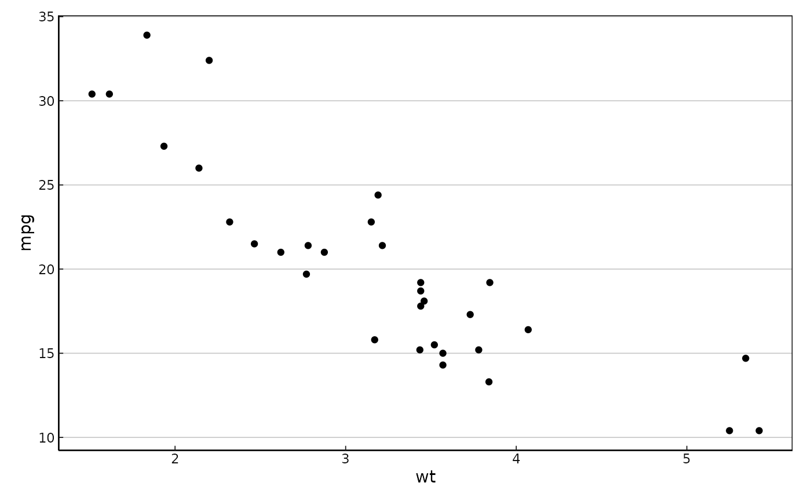

Journal-style theme core (print-friendly)
theme_journal_core.RdA small, conservative theme scaffold tuned for old-fashioned journals: clear axes, restrained grids, and white backgrounds. It avoids touching text sizes—only layout, lines, and colors—so it plays nicely with your own font helpers.
Usage
theme_journal_core(
base_size = 11,
base_family = NULL,
grid_major_y = TRUE,
grid_major_x = FALSE,
grid_minor = FALSE,
panel_border = TRUE,
strip_border = TRUE,
axis_ticks_inside = TRUE
)Arguments
- base_size
Numeric base text size passed to
ggplot2::theme_minimal(). Defaults to 11. This does not change sizes you have already set explicitly.- base_family
Optional base font family. Leave
NULLto inherit.- grid_major_y, grid_major_x
Logical; draw major grids on Y / X?
- grid_minor
Logical; draw minor grids?
- panel_border
Logical; draw a thin black panel border?
- strip_border
Logical; draw a thin border around facet strips?
- axis_ticks_inside
Logical; if
TRUEticks point inward.
Value
A ggplot2::theme object.
Examples
if (requireNamespace("ggplot2", quietly = TRUE)) {
library(ggplot2)
p <- ggplot(mtcars, aes(wt, mpg)) + geom_point()
p + theme_journal_core()
}
